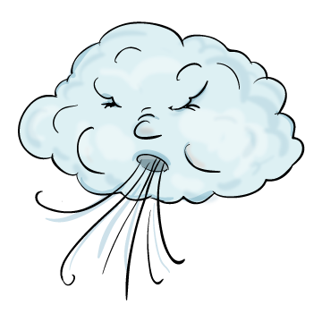

A Szél és a Nap
Vi-tat-ko-zott hajdan a Szél a Nappal. Azon per-le-ked-tek, ki az erős. Azt mondta a Nap a Szélnek:
– Döntsön a tudás! Amott utas jön felénk, lássuk ki az erős, ki tudja a válláról leszedni a ruháit? Hoz-zá-lá-tott a Szél: tépte, tépázta előre-hátra a ruhákat, de az utas erősen ösz-sze-húz-ta a ruháit.

A Szél hasztalan e-ről-kö-dött, fá-rasz-tot-ta minden por-ci-ká-ját.
Akkor jött a Nap: forrón és kedvesen nézett az utasra, aki lassanként le-ve-tet-te ruháit.
– Nos, ki az erős? – kérdezte a Nap.
(népmese)